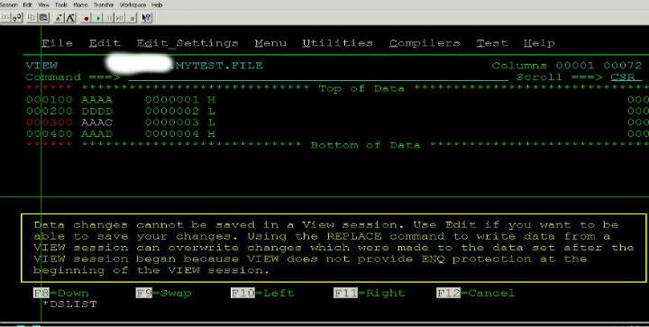
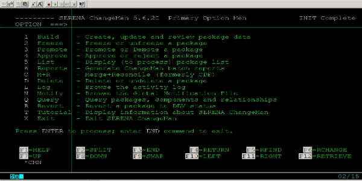

介绍几个比较有用的ISPF命令(续一)
接上次讲的，这里继续介绍几个常用的有用的命令。
COMP
这是比较文件的命令，功能类似于ISPF 3.13选项。如果你正打开自己PDS下面的DMSID01.TESTLIB.PRGM(MYPGM01)编辑，你想跟你同事(DMSID02)PDS下面的一个MYPGM02比较看看有什么不同的话，你可以直接在Command栏上输入命令：
COMP 'DMSID02.TESTLIB.PRGM(MYPGM02)'
COMP EXC
这是COMP的高级选项，再后面加上EXC让比较结果中只显示不同的行。当然，为了不失关联性和便于理解，它还额外保留了不同处的前后各5行，显得特别人性化。可以简化成'COMP X'
F1 twice
很经常会有你想编辑某个DATASET或者Member的时候提示"Member in use",这时候你可以连续按两次F1，就能知道谁当前正在使用这个DATASET或者Member了。
HEX ON/OFF
文件中经常有些字符在普通的View ...
3390 volume,cylinder,track
通常我们用的是3390盘卷(Volume)，一个Volume有多大呢？可以这么计算：
一个3390盘卷有3339+1=3340个柱面(Cylinder);
一个柱面(Cylinder)有15个磁道(track);
一个磁道(track)大概可以保存56KB数据;
一个G=1024M;
综上可以得到：一个3390判卷(Volume)=3340x15x56=2805600KB，约等于2.6756G
因为在大机上处理的数据基本都是文本，所以这样的量还是够用的，以至于我到现在也很少遇到需要跨卷的情况。
介绍几个有用的ISPF命令(续二)
M+F7 和 M+F8
命令行上输M,接着按F7, 表示回到文件最顶端
命令行上输M,接着按F8, 表示回到文件最低端
COL
显示列号，这个命令特别是在对齐的时候很有用。因为在JCl语法中，很多关键字必须规定从第几列开始写，不然会出错的，比如JCLLIB ORDER一定要从第四列开始写，所以用COL命令显示行号是很有必要的。
HI
语法高亮用HI，比如可以用HI PLI来高亮PL/I代码，用HI COBOl高亮COBOl代码，用HI JCL来高亮JCL语法，用HI REXX来高亮REXX语法，用HI ASM来高亮汇编代码，一共支持18种语言。可以HI ...
常见的TSO ISPF命令
几个概念
TSO
TSO(Time Sharing Option)，时分操作，可以同时让多个用户登录到大机上。一般我们认为的TSO是命令行模式，像一些LOGON，LOGOFF，之类的命令与大机交互。
ISPF
ISPF(Interactive System Programming Facility)，它提供了一个menu菜单系统来与大机交互，可以说就是一个简单的menu system。
好了，言归正传。下面是必须知道的ISPF命令:
ISPF功能键
PF1： HELP帮助键
PF2： SPLIT键，改变分屏位置
PF3： END键，结束并退回上级菜单
PF4： RETURN键，结束并退回主菜单
PF5： REFIND键，重复最近一次FIND命令
PF6： RECHANGE键，重复最近一次CHANGE命令
PF7： UP键，向上滚屏
PF8： DOWN键，向下滚屏
PF9： SWAP键 ...
介绍几个比较有用的ISPF命令
上一篇讲的是常见的TSO/ISPF命令，这篇来讲讲我收集到的日常比较有用的ISPF命令。
HRECALL
大机上的Dataset比较久了没有被访问的话会自动被迁移(migrate)到tape中保存的，根据时间的长短，Dataset会被migrate到不同的level，比如MIGRAT1,MIGRAT2等等。这时，如果你想把这个Dataset 召(Recall)回来的话，平常我们都在这个Dataset前面打个Call命令。这样做有个不好的地方，就是如果这个Dataset需要很长时间才能被RECALL回来的话(比如30分钟)，那这30分钟之内你只能看着屏幕发呆而啥都干不了了。所以这种情况下你可以试试后台Call的命令HRECALL，它在后台操作，结束后会有提示，完全不影响你做其他事情
NUM OFF
有时你在编辑一个Dataset的行末尾的时候，每次保存都会提示:Some input dataignored。这时因为默认情况下末尾的行号显示是开着占了8位，这8位是不可修改的，这时你可以试试在命令行上打个NUM OFF把行号显示关了。
XDC
这是一个SDSF(系统显示与查询工具 的命令，如果你想把一个JOB的输出Log保存到某个地方，比如自己的PDS，那么你可以在SDSF里面在这个JOB的Log前面打上XDC，然后写上你要保存的地方即可 ...
more ...Dataset View和Browse的区别
在大机上，View和Browse都能查看dataset/member，它们有什么区别呢？下面是我在平常的工作当中找到的三点区别，欢迎补充！
1、Browse默认显示80列，而View默认显示72列，当然两者都可以用PF11向右翻页。
2、Browse不允许修改，尝试修改会马上锁屏，而View可以修改，但不能保存成当前同名的，就是说有"另存为"的功能。
3、Browse下许多命令不能用，比如语法高亮HI ON,比如JCL语法检查JEM，而View下都可以用。
你在view一个Member，若尝试做任何更改，会跳出这样的一段提示的话:

当你在View一个member的时候，可以在左边列用两个CC选择你要另存为的范围，然后在command栏上输入CREATE，回车即可另存为了:

个人认为View最有用的就是可以提交别人的JCL。下图中，假设你的ID是USERID02,而USERID01是你同事的ID，你自然是没有权限去sub他/他的JCL，这时，你要么可以把这个JCL拷到你自己的LIB下面改成你的ID再sub，要么直接View进去，改成你的ID，sub完之后无需保存即可。对于这种别人的JCL又不想麻烦地copy到自己lib时，是不是方便多了呢？

DATACOM数据库介绍
CA Datacom听过么？它是CA(Computer Associates)公司的企业级数据库。以能承受高负荷和较强的容错性著称，在mainframe平台上有比较广泛地应用，不过最近几年Datacom公司貌似不怎么行了，大家都换上了IBM的DB2数据库了。
Datacom不是关系型数据库，它是通过KEY来访问记录的，可以说是具备了基本的文件系统特征。通常KEY是某个或某几个字段的组合，一个table可以有多个KEY。在PL/I或COBOL程序中访问Datacom是通过调用接口DBNTRY来实现的(XXX是table名字)。 在COBOL中是这样call的(XXX是table名字)：
CALL ‘DBNTRY’ USING USER-ID
XXX-REQ-AREA
XXXF0
XXX-ELEMENT-LIST
而在这之前，要先声明：
01 USER-ID.
05 PROGRAM-NAME PIC X(08) VALUE 'MYPGM00 '.
05 FILLER PIC ...大机平台的版本控制工具Changeman
在主机上面有好几个比较常见的版本控制工具，比如changeman和Endevor。我介绍下changeman。
ISPF面板上输入C;1

changeman的界面，这里装的版本是5.6.2c，

我介绍下各个常用选项
1.
用来新建，更新一个package的，你需要新建一个package来放置你的PL/I，COBOL程序和JCL等等
2.
将package freeze或unfreeze，在你觉得package里面的所有东西都测试得差不多了，可以准备上线安装之前，你要先freeze冻结掉这个package，然后等待相关项目管理人的approve，这样这个package才能被合法地安装。当然，如果你冻结了package之后，发现还有程序需要被修改什么的，这时候你可以反冻结(unfreeze)它，最好在package还没被approve之前。
3.
promote 或 demote。promote就是把你修改的程序版本提升到更高的level去。举个例子，一般PL/I或COBOL等写的程序在进入生产环境之前都会经过开发(Dev)——>系统集成测试(Sys)——>用户接收测试(UAT)——>生产环境(Prod)，promote就是可以把你的程序从较低的level提升到较高的level，慢慢接近prod，而demote反之就可以了。
4 ...
more ...登陆大型机——Aviva的介绍
一般我们日常用PC机工作拿什么软件来跟大型机(以下简称大机)交互呢? 理论上说几乎所有的终端登陆软件都可以的。而且一般每种终端登陆软件都支持多种协议连接到大机上，比如最常见的TCP/IP，FTP,TELNET,SSL等等。这些软件有很多，外面比较常用的是PCOMM，putty，SecCRT等等，我只用过PCOMM，稍微配置下IP啥的就可以连大机了。这个百度下就出来一堆。
我们公司比较另类，用的终端软件叫Aviva，一般我们读作"鹅vi哇"，希伯来词，意为“美丽的春天”, 产自美国美国(Eicon)公司。谷歌能下载到，不过只有试用版的貌似。
下面我说下Aviva的一些基本概念和使用。
Destination和Session的配置:
所谓Destination 就是大型机的物理IP，你要连接到大型机上，就必须得配置下大型机的IP。装好aviva后，开始——>程序——>Eicon Aviva——>Create New Destination 这里destination的名字就取：My Destination ...
more ...Hercules搭建z/OS虚拟机遇到的问题及解决办法
初学，在windows上搭建z/OS虚拟机，遇到不少问题，找到解决方法，记在这里。
PCOMM每次都提示打印，怎么去掉这个烦人的窗口？
解决办法：
PCOMM去掉每次连接提示打印的烦人窗口的方法：在D:\SOFTWARE\IBMPCOMM\private\*.ws文件里面添加：
[LT]
IgnoreWCCStartPrint=Y
UndefinedCode=Y
UndefinedDBCSChar=Y
如何为每一个磁盘建立shadow？
解决办法：
比如：sf+0A80: 为设备号为0A80的设备建立shadow (设备号只是个临时的概念)
IEE038E AMOUNT OF EXPANDED STORAGE EXCEEDS 0G MAXIMUM

解决办法：
在zOS1.9.cnf配置文件中删掉下面一行即可：
XPNDSIZE 6